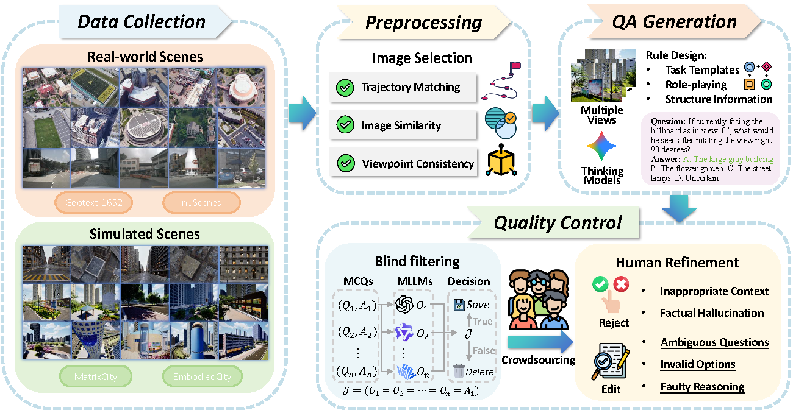

Abstract
Cross-view spatial reasoning is essential for embodied AI, underpinning spatial understanding, mental simulation, and planning in complex environments. Existing benchmarks primarily emphasize indoor or street settings, overlooking the unique challenges of open-ended urban spaces characterized by rich semantics, complex geometries, and view variations. To address this, we introduce CityCube, a systematic benchmark designed to probe cross-view reasoning capabilities of current VLMs in urban settings. CityCube integrates four viewpoint dynamics to mimic camera movements and spans a wide spectrum of perspectives from multiple platforms (e.g., vehicles, drones, satellites). It features 5,022 meticulously annotated multi-view QA pairs categorized into five cognitive dimensions. Our evaluation of 33 VLMs reveals a significant performance disparity: even large-scale models struggle to exceed 54.1% accuracy, remaining 34.2% below human performance.
Project Overview
Figure 1: Illustration of the CityCube benchmark. Left: Embodied orbiting observation. Middle: Multi-choice QA examples. Right: Task distributions.
Benchmark Curation
Evaluation Taxonomy
CityCube evaluates VLMs across five fundamental spatial intelligence dimensions:
- Spatial Relations (SR): Distance, direction, and topology.
- Perspective Taking (PT): Object grounding across views.
- Mental Reconstruction (MR): Spatial transformation simulation.
- World Knowledge (WK): Urban commonsense and geometry.
- Comprehensive Reasoning (CR): Multi-step inference (e.g., navigation).

Data Generation Pipeline
We collect 18.1K images from diverse real-world datasets (nuScenes, GeoText-1652) and high-fidelity simulators (MatrixCity, EmbodiedCity). The pipeline includes trajectory matching, image similarity filtering, and a rigorous human-AI collaborative QA generation process.
Main Results
Accuracy of 33 VLMs on CityCube. Bold indicates best, underline indicates second best.
| Method | Rank | Avg. | World Knowledge | Perspective Taking | Spatial Relation | Mental Recon. | Comp. Reasoning | |||||||||||||||
|---|---|---|---|---|---|---|---|---|---|---|---|---|---|---|---|---|---|---|---|---|---|---|
Overall |
Urban Svc. |
Obj Ident. |
Obj Count |
Overall |
Another-view |
3rd Person |
Reverse |
Overall |
Obj Dir. |
Rel Pos. |
Cam Move |
Overall |
Multi-Obj |
Rot Pred. |
Left-turn |
Overall |
Route Plan |
Target Dir |
Loc Type |
|||
| Baselines | ||||||||||||||||||||||
| Random | - | 22.8 | 19.2 | 24.0 | 3.2 | 24.4 | 20.5 | 18.3 | 21.9 | 11.5 | 25.5 | 25.0 | 25.2 | 25.0 | 22.0 | 25.1 | 15.0 | 24.2 | 25.2 | 16.0 | 28.1 | 28.6 |
| Human Level | - | 88.3 | 78.6 | 85.0 | 84.0 | 73.2 | 87.4 | 93.0 | 94.2 | 96.5 | 90.2 | 79.2 | 84.9 | 86.4 | 92.4 | 84.2 | 89.4 | 96.8 | 93.1 | 100.0 | 91.5 | 86.4 |
| Proprietary Models | ||||||||||||||||||||||
| GPT-5.1 | 3 | 53.4 | 58.3 | 47.0 | 70.2 | 53.1 | 46.9 | 32.2 | 27.7 | 44.3 | 51.6 | 56.7 | 44.5 | 42.7 | 53.7 | 42.9 | 52.2 | 38.2 | 57.8 | 14.0 | 59.3 | 48.6 |
| Gemini-2.5-Pro | 2 | 53.8 | 57.9 | 55.0 | 57.5 | 47.0 | 50.9 | 33.9 | 41.3 | 51.3 | 50.9 | 60.8 | 39.5 | 30.1 | 52.0 | 41.4 | 43.4 | 43.4 | 59.3 | 24.0 | 49.2 | 55.7 |
| Qwen-3-VL-Plus | 5 | 45.2 | 40.8 | 42.0 | 63.8 | 37.8 | 44.6 | 47.0 | 41.7 | 52.2 | 46.5 | 60.0 | 35.3 | 31.8 | 37.1 | 44.2 | 45.1 | 37.1 | 56.7 | 18.0 | 47.5 | 52.1 |
| Step-1o-turbo-vision | 4 | 51.8 | 55.9 | 42.0 | 41.3 | 46.0 | 48.2 | 39.1 | 35.5 | 47.8 | 45.8 | 56.7 | 39.5 | 34.6 | 52.5 | 41.9 | 45.1 | 37.1 | 59.5 | 10.0 | 55.9 | 57.1 |
| Doubao-seed1.6 | 1 | 54.1 | 57.7 | 43.0 | 73.4 | 48.4 | 56.3 | 39.1 | 51.7 | 52.2 | 46.9 | 55.0 | 38.7 | 35.9 | 54.8 | 43.3 | 47.8 | 36.6 | 58.8 | 28.0 | 55.9 | 55.7 |
| Skywork-R1V4-Lite | 6 | 40.1 | 38.6 | 49.0 | 43.6 | 34.3 | 35.8 | 27.0 | 18.2 | 46.9 | 34.6 | 35.8 | 29.4 | 19.6 | 42.9 | 31.6 | 43.4 | 29.6 | 51.0 | 8.0 | 39.0 | 48.6 |
| Open-source Models | ||||||||||||||||||||||
| Qwen3-VL-8B-Inst | 3 | 43.1 | 36.1 | 20.0 | 28.7 | 14.1 | 37.6 | 24.4 | 27.3 | 25.7 | 45.8 | 40.0 | 30.3 | 37.3 | 44.2 | 37.2 | 38.1 | 34.4 | 49.6 | 22.0 | 44.1 | 30.0 |
| Qwen3-VL-8B-Think | 9 | 39.7 | 41.8 | 22.0 | 41.5 | 35.7 | 36.3 | 28.7 | 22.7 | 20.4 | 39.0 | 35.8 | 21.9 | 36.4 | 39.0 | 20.9 | 36.3 | 30.7 | 42.9 | 18.0 | 35.6 | 22.1 |
| GLM-4.1V-9B-Base | 5 | 42.6 | 39.7 | 19.0 | 36.2 | 24.4 | 36.2 | 32.2 | 28.5 | 31.0 | 43.0 | 42.5 | 33.6 | 38.6 | 42.4 | 28.4 | 36.3 | 37.6 | 51.3 | 32.0 | 44.1 | 32.1 |
| GLM-4.1V-9B-Think | 1 | 44.9 | 45.8 | 25.0 | 36.2 | 40.9 | 42.8 | 43.5 | 24.8 | 54.0 | 44.8 | 36.7 | 28.6 | 39.1 | 40.2 | 33.5 | 39.8 | 28.5 | 51.5 | 26.0 | 39.0 | 27.1 |
| Kimi-VL-A3B-Inst | 10 | 39.7 | 36.1 | 25.0 | 12.8 | 23.5 | 33.9 | 27.8 | 24.0 | 45.1 | 36.4 | 35.8 | 24.4 | 35.0 | 43.8 | 28.4 | 40.7 | 35.5 | 49.3 | 10.0 | 39.0 | 23.6 |
| Kimi-VL-A3B-Think | 13 | 36.0 | 32.6 | 18.0 | 34.0 | 27.2 | 31.6 | 22.6 | 19.8 | 27.4 | 34.6 | 25.0 | 26.1 | 21.8 | 39.0 | 25.1 | 43.4 | 29.0 | 42.1 | 12.0 | 42.4 | 27.1 |
| MiMo-VL-7B-SFT | 8 | 40.2 | 36.9 | 23.0 | 30.9 | 13.2 | 39.8 | 32.2 | 28.9 | 37.2 | 38.1 | 21.7 | 21.0 | 37.3 | 38.9 | 32.1 | 31.9 | 26.3 | 48.4 | 16.0 | 44.1 | 23.6 |
| MiMo-VL-7B-RL | 7 | 40.9 | 38.2 | 21.0 | 33.0 | 16.9 | 39.9 | 35.7 | 30.2 | 30.1 | 38.4 | 29.2 | 26.9 | 37.3 | 41.2 | 34.0 | 31.9 | 30.1 | 48.2 | 18.0 | 47.5 | 23.6 |
| MiniCPM-V-4.5 | 2 | 43.9 | 37.1 | 20.0 | 19.2 | 19.3 | 44.3 | 40.0 | 34.3 | 33.6 | 42.6 | 36.7 | 26.9 | 35.0 | 43.5 | 35.8 | 38.1 | 31.2 | 52.5 | 26.0 | 37.3 | 27.1 |
| Ovis2.5-9B | 4 | 42.7 | 40.7 | 20.0 | 30.9 | 24.9 | 41.1 | 36.5 | 33.1 | 38.1 | 39.3 | 20.8 | 22.7 | 45.5 | 40.9 | 24.7 | 39.8 | 31.2 | 53.2 | 40.0 | 47.5 | 28.6 |
| LLaVA-NeXT-Video | 16 | 28.3 | 32.6 | 25.0 | 42.6 | 23.0 | 21.5 | 25.2 | 25.2 | 8.0 | 25.9 | 32.5 | 18.5 | 23.2 | 26.3 | 23.7 | 26.6 | 23.1 | 36.6 | 20.0 | 35.6 | 29.3 |
| LLaVA-OneVis-7B | 6 | 42.3 | 37.4 | 22.0 | 28.7 | 27.2 | 34.8 | 28.7 | 25.2 | 48.7 | 43.2 | 30.8 | 28.6 | 50.5 | 45.6 | 24.7 | 37.2 | 37.1 | 49.6 | 20.0 | 30.5 | 29.3 |
| InternVL2.5-8B | 12 | 38.7 | 36.1 | 16.0 | 45.7 | 14.1 | 31.7 | 17.4 | 18.6 | 44.3 | 37.2 | 34.2 | 33.6 | 33.2 | 40.4 | 24.2 | 40.7 | 37.6 | 48.2 | 10.0 | 50.9 | 25.0 |
| Skywork-Reward | 14 | 33.2 | 36.8 | 5.0 | 41.5 | 28.2 | 34.9 | 27.0 | 24.4 | 36.3 | 22.8 | 2.5 | 21.0 | 21.8 | 32.7 | 21.9 | 23.9 | 19.4 | 44.6 | 28.0 | 35.6 | 19.3 |
| Molmo-7B-D | 11 | 38.7 | 33.3 | 17.0 | 25.5 | 30.5 | 33.5 | 31.3 | 20.7 | 30.1 | 36.8 | 28.3 | 34.5 | 32.3 | 41.8 | 26.5 | 33.6 | 28.0 | 48.2 | 26.0 | 44.1 | 33.6 |
| Phi-4-Multi | 15 | 32.0 | 31.8 | 23.0 | 46.8 | 16.4 | 29.0 | 33.9 | 17.8 | 40.7 | 27.3 | 11.7 | 16.8 | 25.0 | 32.0 | 28.4 | 15.0 | 24.7 | 42.0 | 18.0 | 32.2 | 17.1 |
| Spatial Models | ||||||||||||||||||||||
| Spatial-SSRL-4B | 1 | 39.8 | 39.2 | 22.0 | 35.1 | 15.0 | 31.2 | 31.3 | 26.5 | 21.2 | 41.6 | 30.0 | 31.1 | 47.3 | 37.8 | 30.2 | 35.4 | 24.7 | 48.0 | 34.0 | 49.2 | 27.1 |
| SpaceOm-4B | 2 | 38.9 | 38.6 | 25.0 | 40.4 | 23.5 | 34.3 | 33.9 | 23.1 | 48.7 | 37.1 | 35.0 | 19.3 | 33.2 | 37.9 | 26.5 | 36.3 | 34.9 | 47.2 | 8.0 | 45.8 | 35.0 |
| SpaceThinker-3B | 3 | 38.7 | 35.8 | 21.0 | 38.3 | 19.3 | 34.2 | 25.2 | 29.8 | 55.8 | 35.6 | 25.0 | 29.4 | 30.9 | 40.5 | 29.8 | 33.6 | 36.0 | 48.5 | 18.0 | 33.9 | 33.6 |
| Fine-Tuning Results (CityBot) | ||||||||||||||||||||||
| Qwen3-VL-2B (base) | 9 | 30.4 | 26.4 | 30.0 | 10.0 | 22.7 | 23.4 | 25.0 | 12.0 | 33.3 | 37.1 | 50.0 | 41.7 | 31.8 | 25.4 | 13.6 | 16.7 | 26.3 | 36.7 | 20.0 | 50.0 | 28.6 |
| CityBot-2B (CoT) | 4 | 60.2 | 61.5 | 40.0 | 70.0 | 59.1 | 62.8 | 48.3 | 56.0 | 83.3 | 60.1 | 75.0 | 41.7 | 45.5 | 50.9 | 31.8 | 38.3 | 31.6 | 67.4 | 60.0 | 50.0 | 57.1 |
| CityBot-2B (w/o CoT) | 6 | 55.8 | 58.2 | 40.0 | 50.0 | 68.2 | 50.0 | 41.7 | 28.0 | 75.0 | 57.3 | 66.7 | 41.7 | 45.5 | 46.1 | 18.2 | 33.3 | 42.1 | 67.4 | 40.0 | 50.0 | 60.0 |
| Qwen3-VL-4B (base) | 8 | 36.6 | 38.5 | 20.0 | 60.0 | 40.9 | 27.7 | 41.7 | 28.0 | 12.5 | 37.8 | 50.0 | 25.0 | 36.4 | 39.2 | 27.3 | 41.7 | 15.8 | 38.8 | 40.0 | 33.3 | 28.6 |
| CityBot-4B (CoT) | 2 | 61.0 | 67.0 | 50.0 | 70.0 | 72.7 | 59.6 | 50.0 | 48.0 | 66.7 | 58.1 | 66.7 | 41.7 | 50.0 | 54.9 | 27.3 | 41.7 | 68.4 | 67.4 | 80.0 | 50.0 | 71.4 |
| CityBot-4B (w/o CoT) | 3 | 60.4 | 62.6 | 34.3 | 50.0 | 68.2 | 53.2 | 33.3 | 28.0 | 75.0 | 58.0 | 66.7 | 41.7 | 45.5 | 59.8 | 31.8 | 41.7 | 52.6 | 69.4 | 40.0 | 83.3 | 64.3 |
| Qwen3-VL-8B (base) | 7 | 37.1 | 40.7 | 20.0 | 60.0 | 45.5 | 26.6 | 8.3 | 16.0 | 58.3 | 42.0 | 66.7 | 33.3 | 31.8 | 38.2 | 22.7 | 41.7 | 26.3 | 35.7 | 40.0 | 50.0 | 57.1 |
| CityBot-8B (CoT) | 1 | 61.4 | 64.8 | 50.0 | 70.0 | 77.3 | 62.8 | 41.7 | 52.0 | 91.7 | 58.0 | 75.0 | 50.0 | 54.6 | 52.9 | 40.9 | 50.0 | 36.8 | 64.8 | 60.0 | 66.7 | 71.4 |
| CityBot-8B (w/o CoT) | 5 | 57.8 | 58.2 | 40.0 | 50.0 | 68.2 | 54.3 | 50.0 | 32.0 | 83.3 | 57.3 | 75.0 | 33.3 | 45.5 | 53.9 | 31.8 | 25.0 | 52.6 | 65.3 | 20.0 | 66.7 | 50.0 |
Deep Analysis
Task Correlation Analysis
We observe generally substantial correlations across the five CvSI categories. Notably, Mental Reconstruction (MR) and Perspective Taking (PT) exhibit the highest inter-dimension correlation (r=0.536), suggesting a shared reliance on underlying cognitive mechanisms. Metric estimation tasks show negligible correlation with others, indicating they constitute a distinct capability.
Human-AI Difficulty Gap
There is an extremely low correlation (R²=0.010) between human accuracy and VLM performance. Tasks found difficult by VLMs do not necessarily pose a challenge for humans, and vice versa. This divergence confirms that CityCube captures unique spatial challenges that are non-trivial for current model architectures, despite being intuitive for humans.
Citation
@article{CityCube2026,
title={CityCube: Benchmarking Cross-view Spatial Reasoning on Vision-Language Models in Urban Environments},
author={Haotian Xu, Yue Hu, Zhengqiu Zhu, Chen Gao, Quanjun Yin, Yong Li, et al.},
year={2026}
}